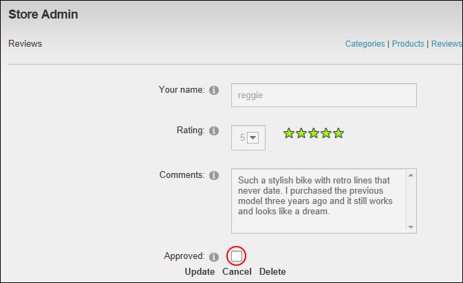

Unapproving Product Reviews
Catalog Managers can unapprove product reviews using the Store Admin module. This removes the review from the Store Catalog thereby hiding it from customers. Unapproved reviews can still be managed via the Reviews list of the Store Admin module.
- Click the Reviews link.
- At Status, select Approved Only.
- Optional. Filter reviews by Category and/or Product. See "Filtering Product Reviews"
- Click the Edit link beside the required review.
- At Approved, .

-
Click the Update button.
- Repeat Steps 3-6 to set additional reviews as unapproved.